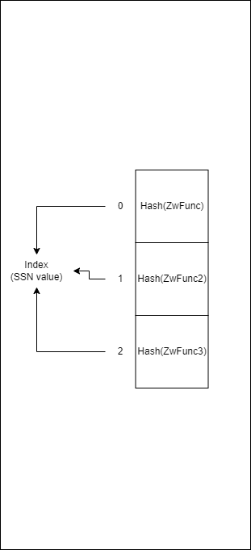
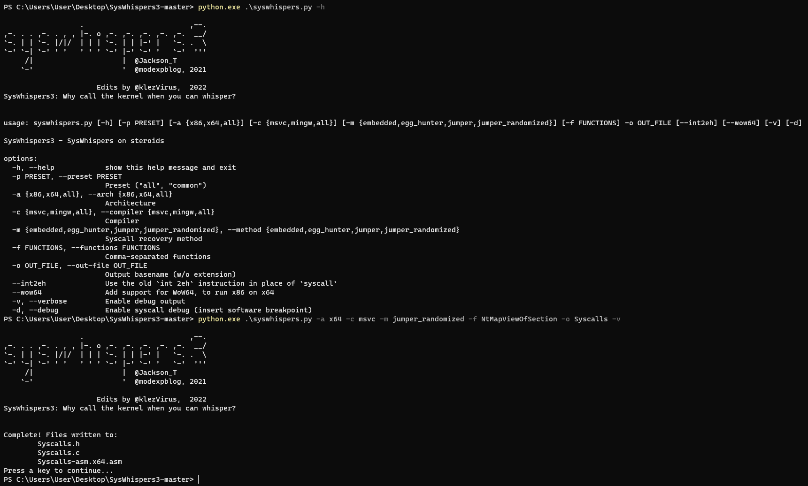

Introduction
SysWhispers is a tool that evades syscalls hooking via direct syscalls. There are several versions of SysWhispers which have different features. The difference between the versions will be discussed in this module.
SysWhispers
SysWhispers generates header/ASM file implants to enable direct system calls on 64-bit systems. It supports syscalls from Windows XP to Windows 10 19042 (20H2). The supported Windows versions are limited since the syscall number (SSN) can be altered with each Windows update. Therefore, a direct syscall implementation for a particular syscall on Windows 10 1903 may not be compatible with the same syscall on Windows 10 1909, and vice versa.
Since the same syscalls may have different SSNs on different versions of Windows, SysWhispers checks the Windows version of the target system at runtime and sets the SSN manually to the correct version.
SysWhispers - NtMapViewOfSection Example
SysWhispers uses a Python script to generate two files (example). The SSNs are derived from the Windows X86-64 System Call Table and are hardcoded into the created assembly file. The assembly functions then determine which SSN to use.
SysWhispers Sample Output
The assembly functions below are derived when SysWhispers is used to generate direct syscalls for NtMapViewOfSection.
// ...
NtMapViewOfSection PROC
mov rax, gs:[60h] ; Load PEB into RAX.
NtMapViewOfSection_Check_X_X_XXXX: ; Check major version.
cmp dword ptr [rax+118h], 5
je NtMapViewOfSection_SystemCall_5_X_XXXX
cmp dword ptr [rax+118h], 6
je NtMapViewOfSection_Check_6_X_XXXX
cmp dword ptr [rax+118h], 10
je NtMapViewOfSection_Check_10_0_XXXX
jmp NtMapViewOfSection_SystemCall_Unknown
NtMapViewOfSection_Check_6_X_XXXX: ; Check minor version for Windows Vista/7/8.
cmp dword ptr [rax+11ch], 0
je NtMapViewOfSection_Check_6_0_XXXX
cmp dword ptr [rax+11ch], 1
je NtMapViewOfSection_Check_6_1_XXXX
cmp dword ptr [rax+11ch], 2
je NtMapViewOfSection_SystemCall_6_2_XXXX
cmp dword ptr [rax+11ch], 2
je NtMapViewOfSection_SystemCall_6_3_XXXX
jmp NtMapViewOfSection_SystemCall_Unknown
NtMapViewOfSection_Check_6_0_XXXX: ; Check build number for Windows Vista.
cmp dword ptr [rax+120h], 6000
je NtMapViewOfSection_SystemCall_6_0_6000
cmp dword ptr [rax+120h], 6001
je NtMapViewOfSection_SystemCall_6_0_6001
cmp dword ptr [rax+120h], 6002
je NtMapViewOfSection_SystemCall_6_0_6002
jmp NtMapViewOfSection_SystemCall_Unknown
NtMapViewOfSection_Check_6_1_XXXX: ; Check build number for Windows 7.
cmp dword ptr [rax+120h], 7600
je NtMapViewOfSection_SystemCall_6_1_7600
cmp dword ptr [rax+120h], 7601
je NtMapViewOfSection_SystemCall_6_1_7601
jmp NtMapViewOfSection_SystemCall_Unknown
NtMapViewOfSection_Check_10_0_XXXX: ; Check build number for Windows 10.
cmp dword ptr [rax+120h], 10240
je NtMapViewOfSection_SystemCall_10_0_10240
cmp dword ptr [rax+120h], 10586
je NtMapViewOfSection_SystemCall_10_0_10586
cmp dword ptr [rax+120h], 14393
je NtMapViewOfSection_SystemCall_10_0_14393
cmp dword ptr [rax+120h], 15063
je NtMapViewOfSection_SystemCall_10_0_15063
cmp dword ptr [rax+120h], 16299
je NtMapViewOfSection_SystemCall_10_0_16299
cmp dword ptr [rax+120h], 17134
je NtMapViewOfSection_SystemCall_10_0_17134
cmp dword ptr [rax+120h], 17763
je NtMapViewOfSection_SystemCall_10_0_17763
cmp dword ptr [rax+120h], 18362
je NtMapViewOfSection_SystemCall_10_0_18362
cmp dword ptr [rax+120h], 18363
je NtMapViewOfSection_SystemCall_10_0_18363
jmp NtMapViewOfSection_SystemCall_Unknown
NtMapViewOfSection_SystemCall_5_X_XXXX: ; Windows XP and Server 2003
mov eax, 0025h
jmp NtMapViewOfSection_Epilogue
NtMapViewOfSection_SystemCall_6_0_6000: ; Windows Vista SP0
mov eax, 0025h
jmp NtMapViewOfSection_Epilogue
NtMapViewOfSection_SystemCall_6_0_6001: ; Windows Vista SP1 and Server 2008 SP0
mov eax, 0025h
jmp NtMapViewOfSection_Epilogue
NtMapViewOfSection_SystemCall_6_0_6002: ; Windows Vista SP2 and Server 2008 SP2
mov eax, 0025h
jmp NtMapViewOfSection_Epilogue
NtMapViewOfSection_SystemCall_6_1_7600: ; Windows 7 SP0
mov eax, 0025h
jmp NtMapViewOfSection_Epilogue
NtMapViewOfSection_SystemCall_6_1_7601: ; Windows 7 SP1 and Server 2008 R2 SP0
mov eax, 0025h
jmp NtMapViewOfSection_Epilogue
NtMapViewOfSection_SystemCall_6_2_XXXX: ; Windows 8 and Server 2012
mov eax, 0026h
jmp NtMapViewOfSection_Epilogue
NtMapViewOfSection_SystemCall_6_3_XXXX: ; Windows 8.1 and Server 2012 R2
mov eax, 0027h
jmp NtMapViewOfSection_Epilogue
NtMapViewOfSection_SystemCall_10_0_10240: ; Windows 10.0.10240 (1507)
mov eax, 0028h
jmp NtMapViewOfSection_Epilogue
NtMapViewOfSection_SystemCall_10_0_10586: ; Windows 10.0.10586 (1511)
mov eax, 0028h
jmp NtMapViewOfSection_Epilogue
NtMapViewOfSection_SystemCall_10_0_14393: ; Windows 10.0.14393 (1607)
mov eax, 0028h
jmp NtMapViewOfSection_Epilogue
NtMapViewOfSection_SystemCall_10_0_15063: ; Windows 10.0.15063 (1703)
mov eax, 0028h
jmp NtMapViewOfSection_Epilogue
NtMapViewOfSection_SystemCall_10_0_16299: ; Windows 10.0.16299 (1709)
mov eax, 0028h
jmp NtMapViewOfSection_Epilogue
NtMapViewOfSection_SystemCall_10_0_17134: ; Windows 10.0.17134 (1803)
mov eax, 0028h
jmp NtMapViewOfSection_Epilogue
NtMapViewOfSection_SystemCall_10_0_17763: ; Windows 10.0.17763 (1809)
mov eax, 0028h
jmp NtMapViewOfSection_Epilogue
NtMapViewOfSection_SystemCall_10_0_18362: ; Windows 10.0.18362 (1903)
mov eax, 0028h
jmp NtMapViewOfSection_Epilogue
NtMapViewOfSection_SystemCall_10_0_18363: ; Windows 10.0.18363 (1909)
mov eax, 0028h
jmp NtMapViewOfSection_Epilogue
NtMapViewOfSection_SystemCall_Unknown: ; Unknown/unsupported version.
ret
NtMapViewOfSection_Epilogue:
mov r10, rcx
syscall
ret
NtMapViewOfSection ENDP
// ...Explanation
The PEB structure contains three members that can be used to determine the Windows OS version:
OSBuildNumberOSMajorVersionOSMinorVersionThe 64-bit assembly functions generated by SysWhispers use these members to jump to the location where the correct SSN is located as a hardcoded value. The logic being utilized is essentially several if & else if statements. For example, if the target machine is Windows 10 1809 then the following logic occurs:
NtMapViewOfSection_Check_10_0_XXXX label is executed.NtMapViewOfSection_SystemCall_10_0_17763 label.0028hNtMapViewOfSection_Epilogue label where the remaining syscall instructions are executed. Recall that a syscall function has the following format:mov r10, rcx
mov eax, SSN
syscall
retSysWhispers2
SysWhispers2 shares the same concept as its previous version with the main difference being that SysWhispers2 does not require the user to specify which Windows versions to support in the Python generator. This is because SysWhispers2 no longer relies on the Windows X86-64 System Call Table for the SSNs and instead uses a method called Sorting By System Call Address. This method eliminates the need to have the assembly instructions manually choose the SSN at runtime, resulting in smaller syscalls stubs.
Sorting By System Call Address
Sorting by system call address is a method to retrieve the SSN of a syscall during runtime. This is done by finding all syscalls starting with Zw and then saving their address in an array and sorting them in ascending order (smallest to biggest addresses). The SSN will become the index of the system call stored in the array.
SysWhispers2 Implementation
Sorting by system call address is done via Syswhispers2's SW2_PopulateSyscallList function which fetches NTDLL's base address and its export directory. Using that information it calculates the RVAs of the exported functions (addresses, names, ordinals). Recall the IAT Hiding & Obfuscation - Replacing GetProcAddress module where this was performed.
Next, SysWhispers2 checks the exported function names for ones prefixed with Zw. Those function names are hashed and saved into an array along with their addresses. After that, SW2_PopulateSyscallList sorts the addresses collected in ascending order.
To find a syscall's SSN, the SW2_GetSyscallNumber function takes the hash of the target syscall name and returns the index where this syscall hash is found in the array. The index value is the SSN of the syscall.
A visual example of the implementation is shown below.

SysWhispers2 Sample Output
SysWhispers2 is used to generate a direct syscall for NtMapViewOfSection.
.data
currentHash DWORD 0
.code
EXTERN SW2_GetSyscallNumber: PROC
WhisperMain PROC
pop rax
mov [rsp+ 8], rcx ; Save registers.
mov [rsp+16], rdx
mov [rsp+24], r8
mov [rsp+32], r9
sub rsp, 28h
mov ecx, currentHash
call SW2_GetSyscallNumber
add rsp, 28h
mov rcx, [rsp+ 8] ; Restore registers.
mov rdx, [rsp+16]
mov r8, [rsp+24]
mov r9, [rsp+32]
mov r10, rcx
syscall ; Issue syscall
ret
WhisperMain ENDP
NtMapViewOfSection PROC
mov currentHash, 060C9AE95h ; Load function hash into global variable.
call WhisperMain ; Resolve function hash into syscall number and make the call
NtMapViewOfSection ENDP
endExplanation
060C9AE95h is the hash value in hex for the ZwMapViewOfSection string. Calling NtMapViewOfSection will first load the hash value into the global variable currentHash, and call WhisperMain. WhisperMain is the function responsible for calling the previously explained SW2_GetSyscallNumber C function that will return the SSN using the syscall's hash value, which in this case is currentHash.
The mov [rsp+XX], XXX instructions are used to save the registers to the stack before calling SW2_GetSyscallNumber, and the mov XXX, [rsp+ XX] instructions are used to restore the registers to what they were before the SW2_GetSyscallNumber call. This is needed because calling SW2_GetSyscallNumber will change these registers' values. Finally, at the end of the WhisperMain function, the usual syscall instructions are there present:
mov r10, rcx
syscall
retNotice how the mov eax, SSN instruction is missing. This is because when a function is called, its returned output is stored in the eax register. Since SW2_GetSyscallNumber was called before these instructions, this means that the SSN is already stored in the eax register.
SysWhispers3
Recall that syscall is responsible for shifting the execution flow from user mode to kernel mode. Legitimate syscall instructions should always be executed from within the ntdll.dll address space. Therefore, when the syscall instruction is included in the binary, as was the case with SysWhispers and SysWhispers2, the syscall instruction occurs from outside of that address space. Therefore, a binary performing a syscall instruction can be an indicator of malicious intent.
The updates in Syswhispers3 are found in the SysWhispers is dead, long live SysWhispers! blog post. The summary of changes is shown below.
Changes To SysWhispers3
Instead of calling the syscall instruction directly from within the assembly functions, SysWhispers3 will search for the syscall instruction in ntdll.dll's address space, perform a jump instruction and execute the syscall instruction. This method is utilizing the indirect syscall technique which is discussed later.
Furthermore, Syswhispers3 comes with a jumper_randomized option that will perform a jump to the syscall instruction that belongs to a random function. For example, when calling NtAllocateVirtualMemory with this option, the syscall instruction that will be jumped to, doesn't belong to NtAllocateVirtualMemory in ntdll.dll. Instead, the instruction belongs to another syscall like the NtTestAlert function.
Similar to the previous version, Syswhispers3 uses the sorting by system call address method to find a syscall.
SysWhispers3 Sample Output
SysWhispers3 is used to generate a syscall calling stub for the NtMapViewOfSection function. Syswhispers3 output looks similar to Syswhispers2 with the main difference being the additional SW3_GetRandomSyscallAddress and SW3_GetSyscallNumber function calls, which are shown and explained below.

Syscalls-asm.x64.asm
.code
EXTERN SW3_GetSyscallNumber: PROC
EXTERN SW3_GetRandomSyscallAddress: PROC
NtMapViewOfSection PROC
mov [rsp +8], rcx ; Save registers.
mov [rsp+16], rdx
mov [rsp+24], r8
mov [rsp+32], r9
sub rsp, 28h
mov ecx, 01A80161Bh ; Load function hash into ECX.
call SW3_GetRandomSyscallAddress ; Get a syscall offset from a different api.
mov r15, rax ; Save the address of the syscall {since SW3_GetRandomSyscallAddress will return the address of the 'syscall' instruction in rax register}
mov ecx, 01A80161Bh ; Re-Load function hash into ECX (optional).
call SW3_GetSyscallNumber ; Resolve function hash into syscall number. {Now, eax has the SSN}
add rsp, 28h
mov rcx, [rsp+8] ; Restore registers.
mov rdx, [rsp+16]
mov r8, [rsp+24]
mov r9, [rsp+32]
mov r10, rcx
jmp r15 ; Jump to -> Invoke system call. {r15 is the address of a random 'syscall' instruction in ntdll.dll}
NtMapViewOfSection ENDP
endSW3_GetSyscallNumber and SW3_GetRandomSyscallAddress
The SW3_GetSyscallNumber function finds the syscall and SW3_GetRandomSyscallAddress fetches the address of the syscall instruction of a random syscall inside of ntdll.dll because the jumper_randomized option was used.
EXTERN_C DWORD SW3_GetSyscallNumber(DWORD FunctionHash)
{
// Ensure SW3_SyscallList is populated.
if (!SW3_PopulateSyscallList()) return -1;
for (DWORD i = 0; i < SW3_SyscallList.Count; i++)
{
if (FunctionHash == SW3_SyscallList.Entries[i].Hash)
{
return i;
}
}
return -1;
}
EXTERN_C PVOID SW3_GetRandomSyscallAddress(DWORD FunctionHash)
{
// Ensure SW3_SyscallList is populated.
if (!SW3_PopulateSyscallList()) return NULL;
DWORD index = ((DWORD) rand()) % SW3_SyscallList.Count;
while (FunctionHash == SW3_SyscallList.Entries[index].Hash){
// Spoofing the syscall return address
index = ((DWORD) rand()) % SW3_SyscallList.Count;
}
return SW3_SyscallList.Entries[index].SyscallAddress;
}